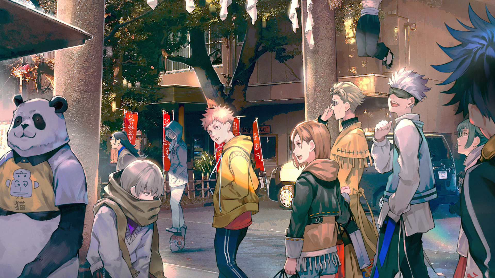

10 Anime Recommendations
Here at AnimeChads4u, we will be providing our favourable anime selections that we also enjoyed!
10. My Hero Academia

Sypnosis
The appearance of "quirks," newly discovered super powers, has been steadily increasing over the years, with 80 percent of humanity possessing various abilities from manipulation of elements to shapeshifting. This leaves the remainder of the world completely powerless, and Izuku Midoriya is one such individual.
Since he was a child, the ambitious middle schooler has wanted nothing more than to be a hero. Izuku's unfair fate leaves him admiring heroes and taking notes on them whenever he can. But it seems that his persistence has borne some fruit: Izuku meets the number one hero and his personal idol, All Might. All Might's quirk is a unique ability that can be inherited, and he has chosen Izuku to be his successor!
Enduring many months of grueling training, Izuku enrolls in UA High, a prestigious high school famous for its excellent hero training program, and this year's freshmen look especially promising. With his bizarre but talented classmates and the looming threat of a villainous organization, Izuku will soon learn what it really means to be a hero.
Danny's Thoughts: My Hero Academia is one of the best animes I watched in my life, the whole plot of the anime focusing around superpowers intrigues me a lot. The main character is an amazing protagonist as he plays the role of being the weak bullied kid and becoming one of the greatest heroes alive.
Rating: 9/10
9. LinkClicked
Sypnosis
It is said that a picture is worth a thousand words. In this case, it holds an infinite amount of secrets. These are secrets that only Cheng Xiaoshi and Lu Guang are able to find. In a small shop called "Time Photo Studio," the two friends provide a special service: using their extraordinary powers that let them enter photographs, they jump into pictures brought to them by clients in order to grant their wishes. Through the eyes of the photographer, they live through the events surrounding the picture and try to decipher how to solve their client's request.
But every time they jump into a picture, they take a great risk. One wrong move and they could alter the future of the person who took the picture... and possibly countless other events too. So when the events they are forced to live through in these pictures start to become personal, it will take the utmost strength to push their feelings aside and focus on accomplishing the task they were paid to do.
Danny's Thoughts: This anime is one of the best sci fi time travel shows I've watched, it is a chinese anime which at first I was scepticle about watching but I was so wrong, this is a Don't judge book by its cover anime.
Rating: 10/10
8. Haikyuu
Sypnosis
Hinata Shoyo’s love for volleyball began when he saw a national championship match on TV. Since then, he has dreamed of becoming a great volleyball player despite his small figure. To achieve this, he joins Karasuno High’s volleyball team and with them, they devote themselves to making it to nationals. The story follows both Hinata and his team as they overcome challenges and grow their passion for volleyball.
Jasmine's Thoughts: This is definitely an anime you should check out if you are interested in sports, especially volleyball! What I really love about Haikyuu is how you can’t dislike any of the characters and you become invested in each character’s back story. It is a really great one to watch if you prefer something more lighthearted (or not so serious) and you really get to follow the characters through their highs and their lows while trying to pursue their volleyball dreams!
Rating: 9/10
7.
6. One Piece
Sypnosis
The story follows Monkey D. Luffy, a 17-year-old boy who is not normal by any means as he possesses the ability of a rubber man. Gold Roger, the previous Pirate King started a new era of pirates as he left his greatest treasure, his everything in one place which our main protagonist, Luffy is also searching for. Join him and his crew as they sail across the seas looking for their next adventure while also helping anyone in need of help despite being a pirate.
Tony’s Thoughts: Definitely one of the best anime that I have personally seen. The strong point of One Piece is not really the animation of the fight scenes but rather the world building of One Piece and how well developed some characters. The only downside to the anime is the pacing which might discourage you from continuing but the bad pacing starts later on in the anime.
Rating: 9.5/10
5. Gintama
Sypnosis
Edo, a city filled with samurai, has been overtaken by powerful aliens known as “Amato''. The government of feudal Japan was abolished as a result of the invasion and was replaced by a puppet government which created a law that prohibits all swords in public. Gintoki Sakata, a samurai, still carries his wooden sword around despite the ban. Gintoki runs a small business for odd jobs alongside his assistance: Shinpachi, a boy with glasses trying to become a samurai; Kagura, a girl from another planet with superhuman strength and Sadaharu, their pet.
Tony's Thoughts: It is in my opinion one of the funniest anime that I have ever seen as every episode is guaranteed to give you a good laugh. The plot’s progression is slow, but it is definitely present as most of the episodes is just random events happening that makes you wonder what went through the writer’s head when he was writing the story.
Rating: 9.5/10
4. HxH (Hunter x Hunter)

Sypnosis
A adventure story where a boy named Gon is on a journey to become a "Hunter" in order to find his dad, Ging who is a legendary "Hunter" and also left him when he was younger. Through out an action packed journey where he meets his best friends: Kurapika, Leorio and Killua which were like his second family.
Klemen's Thoughts: One of the best Shonen anime I have watched. It was an emotional roller coaster ride with its great story telling and character development. It may seem to be boring and slow at the start. As the story goes on arc over arc it gets better especially when it hits its climax in the Chimera Ant Arc which is my highlight of the animated series. One down side is that it is an unfinished series and even so it does bring great story telling, character development and concepts.
Rating: 10/10
3. Jujutsu Kaisen
 Sypnosis
Yuji Itadori, a charismatic boy join a Occult Club where he discovers that the members in the club are sorcerers who can manipulate energy between beings for their own use. He heard about a cursed tailsman a finger of Sakuna, a demon which is attracted to other cursed being of its immense power. Itadori eats the finger in order to protect his friends and ends up being cursed. He is able to control the power without interference from Sakuna. He then joins Tokyo Metropolitan Magic Technical College to consume all of Sakuna's fingers which then he will then under go an exorcism which will set him free.
Klemen's Thoughts: One of the most anticipated anime releases in 2020 which lived up to their expectations. Animations, characters, concepts, development and plot were more than you can ask for. The concept of how the story is driven and enabling to understand how the world of Jujutsu Kaisen. It is very similar to a manga series and an upcoming anime called Chainsaw Man. The anime series isn't complete yet but I cannot wait for more seasons animated for this series.
Rating: 10/10